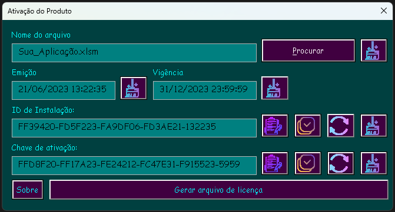
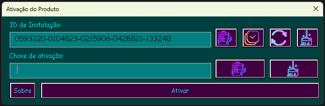

William Slva Dev
Um site para todos os projetos do desenvolvedor William Silva.
Projetos
- Ativador para aplicação em VBA
- Portifólios Online
Projeto mais recente
Ativador VBA App - v1.0 (31-Mai-2023)
GitHub
/ GitLab
Ativador para aplicação em VBA
Procurando um ativador para aplicação em VBA?
Se você é um desenvolvedor que utiliza o Excel, Access ou outros softwares para
criar aplicações e deseja proteger seu capital intelectual,
temos a solução perfeita para você: o Ativador VBA.
Com ele, você poderá desfrutar dos seguintes benefícios:
- Geração de chaves de licença impossíveis de serem replicadas.
- Proteção da aplicação, impedindo sua execução em computadores não autorizados.
- Possibilidade de definir um intervalo de datas em que a chave de ativação é válida,
exigindo uma renovação de licença ao término do período.
Capturas de telas

